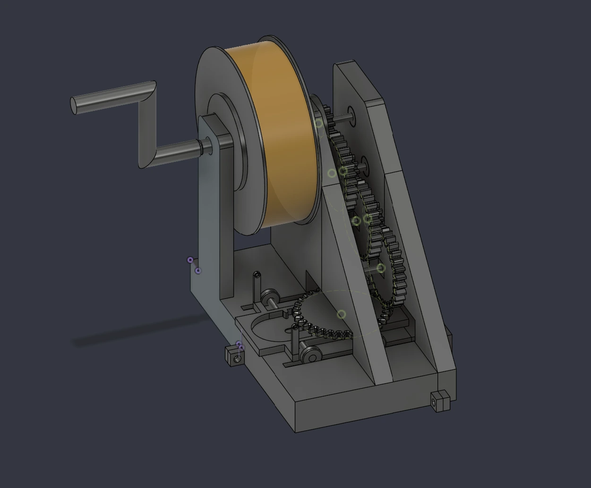

Manual Filament Respooler
One hand crank drives two motions: winding the spool and guiding filament across its width.

How it Works
Turning the hand crank rotates the receiving spool, winding filament onto it. At the same time, a gear train transfers the crank's rotation to a rack-and-pinion mechanism, which moves a filament guide back and forth across the spool's width. This distributes the filament evenly instead of allowing it to pile up in one spot or become tangled. By mechanically linking both motions, the entire respooling process is controlled by a single hand crank.
Components
One input, two motions
The hand crank supplies rotation to the spool and the gear train. The gears carry that motion down the side of the frame to a rack and pinion. As the pinion turns, the guide travels laterally, changing where the filament meets the spool. Coupling those motions mechanically lets the guide follow the operator’s cranking speed.
From CAD to the bench
The assembly combines a PLA base with resin-printed gears. Adjacent gears need to mesh, and the guide needs clearance across the width of the spool. My teammates handled the spool holder and resin printing.
My Contributions
Design & Collaboration
- I designed and modeled the gear train and rack-and-pinion mechanism in Fusion 360, focusing on transferring the hand crank's rotation into controlled lateral movement of the filament guide.
- I collaborated with 3 teammates who developed the spool holder and fabricated the resin-printed components, bringing our designs together into a functional prototype.